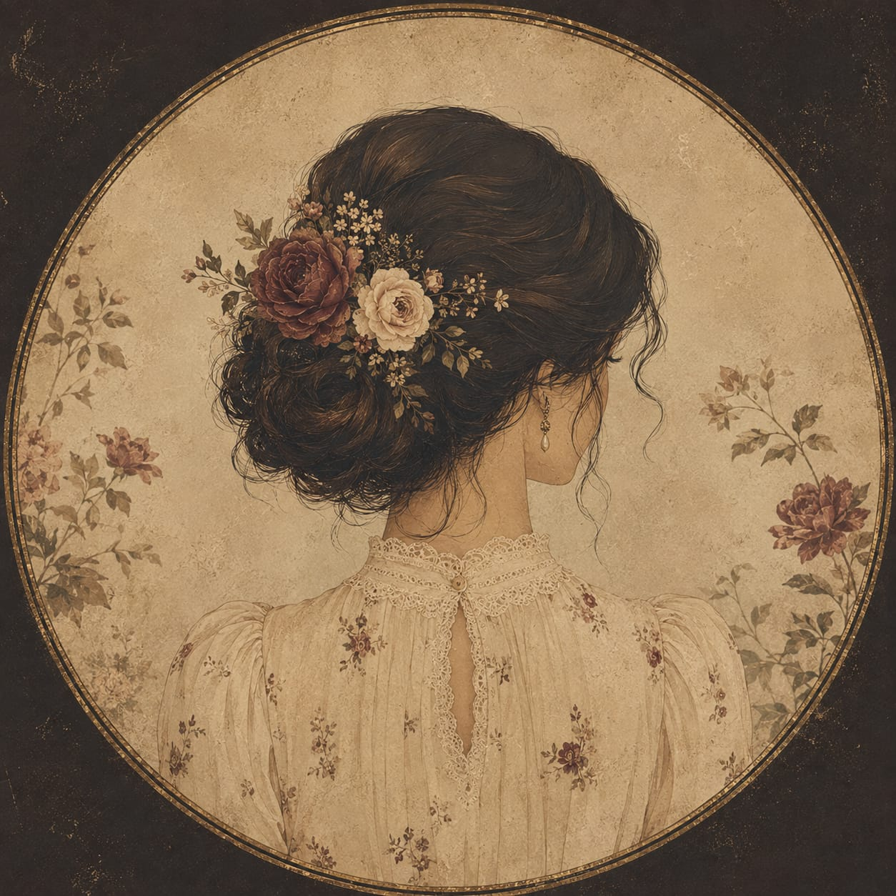

Dra. Phaula Ferreira
Médica · CRM-GO 38980
Ciência, ética e cuidado humano em cada etapa da sua saúde.
Atendimento médico com escuta, acolhimento e decisões compartilhadas.

Médica · CRM-GO 38980
Ciência, ética e cuidado humano em cada etapa da sua saúde.
Atendimento médico com escuta, acolhimento e decisões compartilhadas.